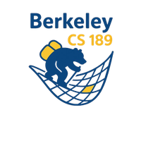
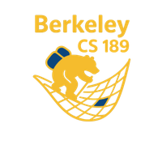
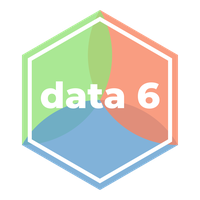
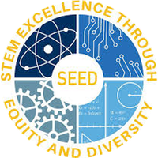
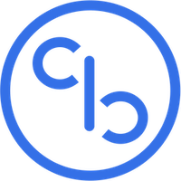
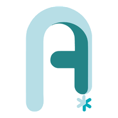

MessyNav: Zero-Shot Interactive Navigation via Manipulation in Messy Environments
Conference on Robot Learning (CoRL), 2026
* Equal contribution

Researcher at Stanford
Hey! I am an undergraduate at UC Berkeley (go bears!) majoring in Electrical Engineering and Computer Sciences.
Currently, I am working in the Interactive Perception & Robot Learning Lab at Stanford, mentored by Professor Jeannette Bohg, Dr. Cherie Ho, and Carlota Parés-Morlans. I am also working in the Stanford Intelligent and Interactive Autonomous Systems Group (ILIAD), mentored by Professor Dorsa Sadigh, Dr. Jennifer Grannen, and Suvir Mirchandani.
My research focuses on deploying mobile manipulators in the wild. I'm interested in bringing robots into unstructured settings and have them continually self-improve.
MessyNav: Zero-Shot Interactive Navigation via Manipulation in Messy Environments
Conference on Robot Learning (CoRL), 2026
* Equal contribution
DexDrummer: In-Hand, Contact-Rich, and Long-Horizon Dexterous Robot Drumming
ICRA 2026 Workshop on Dexterity with Multifingered Hands


CS 189/289A: Introduction to Machine Learning · UC Berkeley Undergraduate Teaching Assistant Aug 2026 – Present
Data 6: Introduction to Computational Thinking with Data · UC Berkeley Tutor Jul 2024 – Dec 2024
SEED Honors Scholars Program Mentor Aug 2025 – Present

CodeBase Project Advisor & Research Division Lead Aug 2025 – Present
Berkeley ANova Education Committee Officer Aug 2022 – Aug 2023